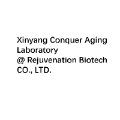

实验室介绍
新阳征服衰老实验室坐落于一个风景如画、森林覆盖率极高的长寿小镇，在黄必录先生的带领下，我们的研究所专注于衰老机制和逆转衰老的研究。在这里，自然之美与科学探索完美融合，四周环绕着郁郁葱葱的森林，空气中弥漫着自然的清新和宁静，为科研工作提供了一个理想的环境。
我们的使命是研发能够逆转细胞衰老，治愈退行性疾病，并最终大幅延长人类寿命的生物技术。我们诚邀世界各地的科研工作者和对长寿科学感兴趣的人士，加入我们的研究团队，一起征服衰老，为人类健康和长寿的事业贡献力量。
视频之旅
通过这个视频，探索我们实验室的愿景和日常工作。
照片画廊

参观一下我们的实验室，认识一下科学背后的团队。通过这些照片一窥每天推动我们研究的奉献精神和创新精神。